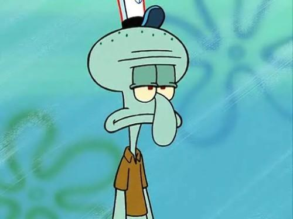

Bob l'Éponge travaille au Krust Krab en tant que cuisinier. Il est aidé de Carlo à la caisse et Monsieur Krabs, leur patron, les surveille de près. Bob est le cuisinier qui fait les meilleurs pâtés de crabe de tout Bikini Bottom. Il est extrêmement attaché à son travail et est déprimé à l'idée d'être dans l'incapacité de travailler (maladie, vacances, fermeture du restaurant...) ou d'être carrément renvoyé.
Bob l'Éponge travaille au Krust Krab en tant que cuisinier. Il est aidé de Carlo à la caisse et Monsieur Krabs, leur patron, les surveille de près. Bob est le cuisinier qui fait les meilleurs pâtés de crabe de tout Bikini Bottom. Il est extrêmement attaché à son travail et est déprimé à l'idée d'être dans l'incapacité de travailler (maladie, vacances, fermeture du restaurant...) ou d'être carrément renvoyé.
Bob a la possibilité de prendre n'importe quelle forme, mais c'est surtout pour faire des gags. Il est essentiellement connu pour sa gentillesse, sa bonne humeur, son humour implacable, son sérieux au travail et pour être quelqu'un digne de confiance. Il est toujours prêt à rendre service aux autres, même quand ceux-ci ne demandent rien.

Carlo est quelqu'un de très désagréable qui n'est jamais content, qui sourit très peu et qui passe son temps à se plaindre. C'est un personnage très solitaire, il aime rester tranquillement chez lui, seul et sans être (tout du moins, c'est ce qu'il pense) qui passe son temps à pratiquer la danse (classique ou moderne), la peinture, la sculpture ou la musique. Carlo se prend en effet pour un grand joueur de clarinette, mais il ne se rend pas compte à quel point il peut jouer faux. En raison de cela, c'est un grand prétentieux et il ne peut pas accepter que quelqu'un arrive à faire mieux que lui.
Carlo est donc le caissier du restaurant le plus populaire de la ville, le Crabe Croustillant. Il prend la commande des clients et leur sert ce qu'ils ont choisi (toujours des pâtés de crabe). Le Capitaine Krabs veille à ce qu'il soit le plus performant possible et qu'il ne s'endorme pas à son poste.
Carlo est donc le caissier du restaurant le plus populaire de la ville, le Crabe Croustillant. Il prend la commande des clients et leur sert ce qu'ils ont choisi (toujours des pâtés de crabe). Le Capitaine Krabs veille à ce qu'il soit le plus performant possible et qu'il ne s'endorme pas à son poste.
 Le crabe rouge le plus connu de Bikini Bottom a de grands yeux qui sortent au dessus de sa tête (mais il peut les rentrer), un nez pointu, deux grosses pinces en guise de mains et ses pieds sont comme des bâtons. Avec l'aide du caissier Carlo et du cuisinier Bob l'Éponge, il vend ses pâtés de crabe dont la recette secrète est dans sa famille depuis le XIIe siècle. Mais ces pâtés de crabe sont si bons que le méchant Plankton, éternel rival du Capitaine, passe son temps à essayer de voler la formule secrète. Le Capitaine Krabs est quelqu'un de très avare, il garde tout l'argent qu'il peut et dépense le moins possible. Dans Incorrigible Capitaine Krabs, il échange Bob l'Éponge au Hollandais Volant pour seulement 62 cents. Il est aussi capable de taxer ses salariés sur leur respiration ou parce qu'ils existent. Il n'hésite pas à laisser son restaurant ouvert 24h sur 24 (Service de nuit et Ouverture non-stop !) pour gagner toujours plus d'argent. Bien sûr dans ces cas là, ce n'est pas lui qui reste au restaurant.
Le crabe rouge le plus connu de Bikini Bottom a de grands yeux qui sortent au dessus de sa tête (mais il peut les rentrer), un nez pointu, deux grosses pinces en guise de mains et ses pieds sont comme des bâtons. Avec l'aide du caissier Carlo et du cuisinier Bob l'Éponge, il vend ses pâtés de crabe dont la recette secrète est dans sa famille depuis le XIIe siècle. Mais ces pâtés de crabe sont si bons que le méchant Plankton, éternel rival du Capitaine, passe son temps à essayer de voler la formule secrète. Le Capitaine Krabs est quelqu'un de très avare, il garde tout l'argent qu'il peut et dépense le moins possible. Dans Incorrigible Capitaine Krabs, il échange Bob l'Éponge au Hollandais Volant pour seulement 62 cents. Il est aussi capable de taxer ses salariés sur leur respiration ou parce qu'ils existent. Il n'hésite pas à laisser son restaurant ouvert 24h sur 24 (Service de nuit et Ouverture non-stop !) pour gagner toujours plus d'argent. Bien sûr dans ces cas là, ce n'est pas lui qui reste au restaurant.